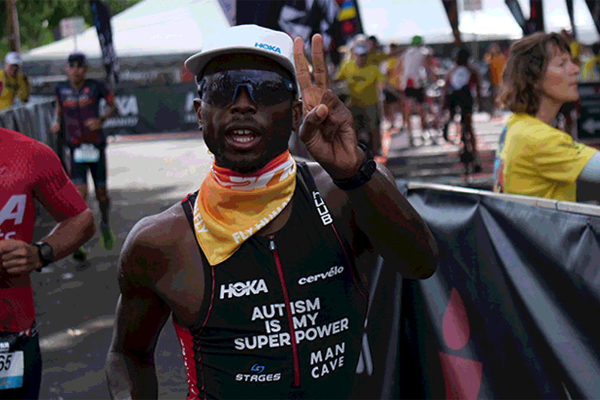

Sam's Journey to IRONMAN & the Guinness World Record
-
Prior to getting confirmation of Sam's World Championship entry, we started planning Sam's move from 70.3 Ironman races to the full 140.6 event. Training for a full Ironman is very different from a half ironman, not only are the distances doubled but the nutrition requirements are also more complex to manage. We also wanted to complete at least one full ironman event before Kona so that we could set a benchmark and identify any issues that Sam may encounter. The target was Ironman Frankfurt because it is recognized as a great course for first timers, but too easy. Prior to Kona Sam also competed at Lanzarote 70.3 because its volcanic landscape, windy conditions and heat were close to Kona's. But after arriving in Kona and going out on the first day of training we recognised that it was going to be an entirely different challenge.
HOKA: How did Sam's training differ for the IRONMAN® World Championship in Kona?
There was a significant increase in training volume in preparation for the World Championships — more aerobic runs — up to 33km, longer bike sessions — up 6 hours on the bike and 3.5-5.0km swims. There were also longer brick sessions — 4 hours bike + 10km run or 2 hours bike 3 hour run, with a big brick session of 5-hour cycle (150km) and a 30km run at 12km/per hour during the week before we travelled to Kona. The focus for racing at the World Championships was about ensuring that he was strong on the bike to allow him to have a successful run. We were also concerned about his nutrition because he always has GI Issues during his races. We switched his race nutrition to a combination of homemade rice cakes, and chews for his carbohydrate requirements and six bottles of electrolyte during the bike section taking refills as and when required.
We arrived in Kona 10 days before the race to help him acclimatize to the heat and the time zone differences between Kona and the UK, 11 hours. We knew that cycle training on the roads would be difficult, and potentially dangerous, so we carried a portable turbo trainer with us so that Sam could do his workouts from the balcony of the condo overlooking the Pacific Ocean. For his running we used a combination of outdoor hill repeats and road running.
-
HOKA: What does it mean to compete an Ironman?
An Ironman completes a multi-disciplinary sports event of swimming, cycling, and running. It begins with swimming 3.8k (144 length of a 25m swimming pool), cycling 180 km (the distance from London to Oxford and back) and run a marathon (42.2km) all in one go. Very few neurotypical people complete this epic race and even fewer who are neurodiverse or have a disability. The race in Kona had a few exceptions. Alongside Sam, there was Chris Nikic the first triathlete with downs syndrome to complete an Ironman, and Sebastien Bellin a pro basketballer that was injured in a Brussels terrorist attack. Both are great examples of individuals who have overcome adversity to complete the world's most challenging endurance event.
HOKA: What is Kona like?
Kona was great, we were surprised to see coconuts, breadfruit (Ulu) and mango trees with a climate that was comparable to Jamaica, where Sam's grandparents live. A fact about the Big Island is that it is the most southerly location in the United States, further south that the Florida Keys.
Kona is notorious for being the hardest race on the triathlon circuit making it a perfect location for the World Championships. But it's not only the cycle course with its long rolling hills or the punishing run at the end that makes it so challenging, it's the heat and humidity that makes this course so difficult. On race day the temperature reached more than 90 degrees with 90 percent humidity, warm seas, and a head-on breeze during the first 90km of the bike ride. If athletes didn't struggle with the race conditions, they had to deal with the nutrition challenges and the risks of dehydration, hyponatremia or hypoglycemia, all the things that can prevent the athlete from finishing. In addition, there are other physiological and psychological challenges to overcome. This race is a heady mixture of what endurance sport is about and the reason why so few individuals rise to the challenge.
-
HOKA: How was your journey to Kona?
We left the UK to travel to Kona on the 16:30 flight from London and arrived in Los Angeles at 20:00 and boarded a flight to Kona the following morning, taking approximately 24 hours door-to-door. When we eventually arrived, there were only two bags that Sam was looking for, his bike box and his race gear, everything else was replaceable. On arrival at the Big Island, we didn't know what to expect, would we meet Dano and Mcgarrett from Hawaii 5-0, or would it match our vision of one of the most beautiful places in the world, it was definitely the latter.
HOKA: What was it like when you arrived in Kona?
The first thing that hit us was the heat and the humidity, it was wonderful. While I went off to get the rental car, Marilyn (Mum) and Sam started chatting to other triathletes about the race, some were first timers and others were veterans, and learned a lot about what to expect. My next job was to find our condo, this is always challenging because I had to adjust to driving on the “wrong” side of the road, in the UK we drive on the left. After about 30 minutes we found our home for the next 2 weeks. The property had access to a swimming pool and a gym, and glorious views of the Pacific Ocean from the veranda. However, we didn't realise how beautiful the Big Island was until the next morning when we were woken by the sounds of chirping birds, a lizard climbing up the window and the glorious sunrise. But Sam quickly reminded me that he was here to race and not holiday because he wanted to start his final training regime.
-
HOKA: What was your first workout?
The first workout was a run of course, because this was the best way to get used to the heat and the humidity. After driving for a couple of miles, we found a great location for hill repeats near Lekeleke Burial grounds, almost two miles from our condo at Kahalu'u Keauhou. Sam wore his Bondi 5, his favourite shoe for training, and will use the Carbon X 3 on race day. Each rep was up a hill 400m long with a 12-degree incline. It was 10 o'clock in the morning, and although it wasn't the hottest time of the day it was perfect for his first run of 20 reps. We didn't know that Sam could sweat so much and how much water he needed to drink. This session confirmed that nutrition was going to be crucial. He followed this run with a short swim in the sea, a big lunch, and a deep sleep for 6 hours, tired from the long flight and his first workout.
HOKA: What was your training routine like in the build-up to the race? Please describe Sam's experience during race week and during the race itself.
Although the pressure built as we got closer to race day, Sam is eerily calm, he was much calmer than his Mum and myself. He seems to have a quiet self-belief that he will finish, even if he has to crawl over the finishing line while we just wanted him to finish safely.
During race week we are inundated with requests from the press for photographs and interviews, Sam had an exciting meeting with the G.O.A.T of triathlon Jan Frodeno, who gave him a few pointers about racing at Kona. We also had to fulfil lots of media commitments and tried to use the time for a bit of light fun. It was great to check out the Ironman village, collecting as many freebies as possible, meeting new and existing sponsors and spotting celebrities. There were a couple of other great highlights, one was being interviewed by the legendary Bob Babbitt on Breakfast with Bob and the other was sharing my journey to Kona with an audience at the HOKA exhibition stand.
We had Sam's bike serviced by Cervelo with new tires and new chain and we started carb loading three days before the race to make sure that Sam's glycogen levels were optimum. On the 5th October, the day before the race, we added his race number to his helmet and checked-in his bike and race bags.
The night before the race isn't great for getting some rest, no one sleeps, and we all needed to get up at 3:00am on race day to get the starting line for a 7:40am start. Sam had his breakfast of rice cakes with peanut butter and 1.0L of electrolyte with 1500mg of sodium as his pre-race nutrition. We also double checked his transition bags to make sure that he had all the nutrition that he needed for the race. The journey to the swim start, at Kailua Bay, took about 40 minutes and took place in complete silence. Sam had his headphones on listening to the Rocky theme song and Bob Marley, and as parents, we quietly prayed that he remained safe.
It's now 7:20 and the marshal calls the 25-29 Age Groupers to the start line. It's a sunny day in Hawaii but the wind is picking up, causing the sea to get choppy. Sam has never swum this far in the sea without a wetsuit, but he seems confident, and we begin to feel confident when he enters the sea and waves to the audience shouting “yeah, yeah, yeah”. The starter's gun goes off and the race begins. He exits the water 78 minutes later and transitions to his bike, we won't see him for another 6 hours and only start to relax when returns and starts the run.
But all is not well, 25km into the run, between the National Energy Lab and Queen K, he starts having GI Issues with a sloshy stomach. There are lots of potential reasons for this but finding a solution is like looking for the proverbial needle in a haystack and a game of trial and error. It quickly becomes clear that he won't finish in the predicted 11 hours or even 12 hours. It's now after dusk and Sam is running at night, something he has never experienced, and we are worried about how he will cope with this new situation. There are a couple of scenarios, he will stop because he has become disassociated from the race, or he will grind it out and finish. Thank god that we knew that nothing would stop Sam, so we weren't too surprised when we first saw him at 41km on the course with a smile on his face before crossing the finishing line in 13 hours 5 minutes.
-

HOKA: How did the idea of achieving this Guinness World Record first come up? What was that process like?
We had no idea that Sam had achieved a Guinness World Record (GWR), but a week after returning to London from Kona the GWR team in London contacted us to confirm that Sam had achieved this unique feat and all they required from us was medical confirmation of his autism.
HOKA: What does this accomplishment mean to Sam? His family and community? For athletes with autism spectrum disorder?
Competing at Kona has a had a profound impact on other Neurodiverse and autistic athletes, as well as Sam and his family in Jamaica, US, Canada, and the UK. Since Sam competed in Kona, the opportunity has opened for Sam to compete for Jamaica at Pan American games and the Commonwealth Games in 2026. And should he switch to the shorter distances and get the qualifying time, maybe even the Olympics in 2028, this would be phenomenal.
The impact on neurodivergent athletes has been reflected globally with a flood of Instagram DMs and congratulations from around the world. His achievements were also published in several British newspapers and across endurance sports and triathlon social media outlets. However, the best messages came from other autistic athletes and parents of neurodiverse children that see Sam and an icon and proof that with hard work and dedication there is hope for their children.
For Sam, competing at Kona and earning a Guinness World Record has been received with grace and humility by him. It is hopefully a stepping stone to greater things and a long and successful career has endurance athlete. We also recognise that Sam has the capacity to continue to change the perception that is held about people on the autistic spectrum. He also hopes to encourage wider participation in sport, and to help promote increased health, wellbeing, and life expectancy for people who are Neurodiverse and ASD. Sam continues to make us extremely proud parents as his achievements are way beyond our hopes and dreams.
-

Sam has autism, a lifelong developmental disability which affects how people communicate and interact with the world. Autism is across a spectrum, ASD (Autism Spectrum Disorder), that defines how impactful the diagnosis is on the person's daily life. Sam's autism manifests itself through his communication with others, how he reacts to new situations, and how he solves problems. I remember when Sam was cycling around Richmond Park when a motorist stopped his car to look at the deer, the motorist opened his door, knocked Sam off his bike and then drove away without finding out if Sam was ok. Sam was on his third lap of seven and although the incident curtailed his training session, he didn't come straight home, he got on his bike and started the whole training session over, he completed 10 laps with some road rash on his shoulder and thigh. I don't think that this is how a neurotypical person would have solved this problem.